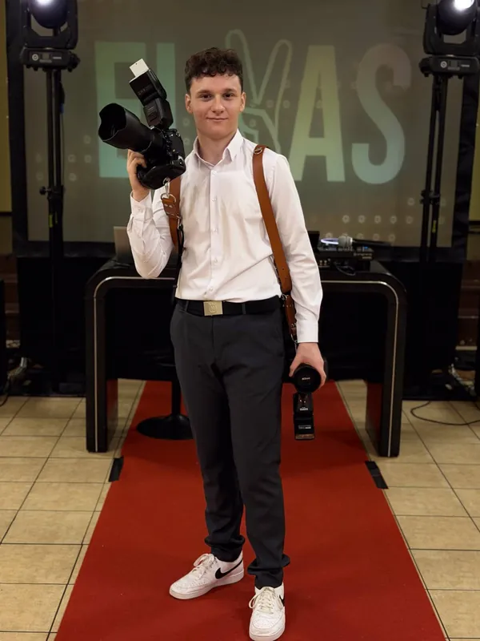

01
Reportaż z imprez
Urodziny, osiemnastki, komunie i spotkania rodzinne. Dokumentuję przebieg wydarzenia, gości i emocje — od przygotowań po tort.
Reportaż z urodzin, osiemnastek i komunii, sesje narzeczeńskie i gender reveal. Naturalne kadry bez sztucznego pozowania — żeby po latach wrócić do tych chwil.

Jako fotograf eventowy skupiam się na prawdziwych emocjach, naturalnych momentach i atmosferze wydarzenia.
Zależy mi, żeby każde zdjęcie pozwalało wrócić do wyjątkowych chwil nawet po wielu latach. Pracuję z zaangażowaniem i wyczuciem — tak, żeby żadna ważna chwila nie umknęła obiektywowi.
Od kameralnych urodzin po duże imprezy rodzinne — dopasuję pakiet do długości i charakteru wydarzenia.
Urodziny, osiemnastki, komunie i spotkania rodzinne. Dokumentuję przebieg wydarzenia, gości i emocje — od przygotowań po tort.

Sesje narzeczeńskie, gender reveal i inne ważne momenty, które chcesz zachować na dłużej — w plenerze lub w wybranym miejscu.
Portret solenizanta, pary albo całej rodziny — naturalnie, bez sztywnego pozowania, z dbałością o światło i tło.
Kilka zdjęć z imprez i sesji. Więcej w pełnym portfolio.
Kalendarz pokazuje dni, w które mogę przyjąć zlecenie. Rezerwacja trwa minutę:
Nie widzisz pasującej daty? Napisz — ustalimy coś indywidualnie.
„Chcę, żeby żadna ważna chwila nie umknęła mojemu obiektywowi. To właśnie te momenty często zostają w pamięci na zawsze.”Bartosz Kaczmarek
Napisz kilka słów o imprezie albo sesji — odpowiem, podpowiem pakiet i zarezerwuję termin.